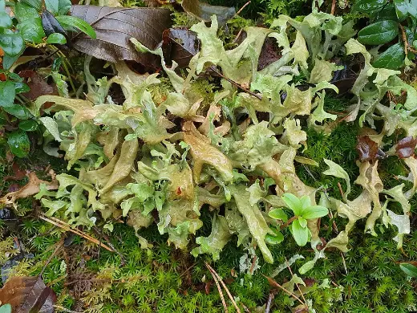

Breads & baking · Popular in Northern Norway
Iceland moss flatbread
Iceland moss flatbread is made with wild iceland moss, a favourite in Northern Norway.

How do you make iceland moss flatbread?
Leached and dried Iceland moss ground into flatbread dough, an old northern famine food.
Wild ingredients
- Iceland moss (Cetraria islandica): in season June to September